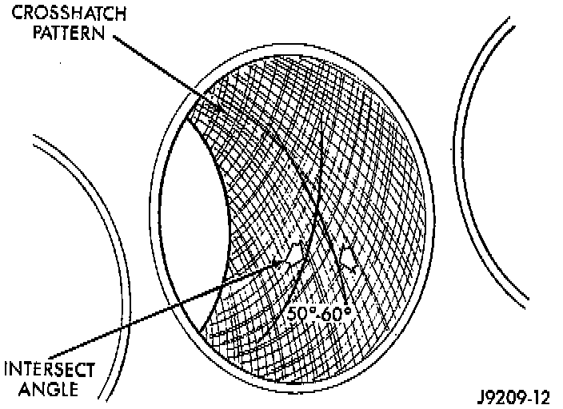

Honing Cylinder Bores
NOTE: Before honing, stuff plenty of clean shop towels under the bores and over the crankshaft to keep abrasive materials from entering the crankshaft area.1. Used carefully, the cylinder bore resizing hone C-823, or equivalent equipped with 220 grit stones, is the best tool for this job. In addition to deglazing, it will reduce taper and out-of-round as well as removing light scuffing, scoring or scratches. Usually a few strokes will clean up a bore and maintain the required limits.
CAUTION: Do Not use a rigid type hone to remove cylinder wall glaze.
2. Deglazing of the cylinder walls may be done using a cylinder surfacing hone, Tool C-3501, or equivalent equipped with 280 grit stones, if the cylinder bore is straight and round. 20 - 60 strokes depending on the bore condition, will be sufficient to provide a satisfactory surface. Inspect cylinder walls after each 20 strokes, using a light honing oil.
CAUTION: Do not use engine or transmission oil, mineral spirits or kerosene.

3. Honing should be done by moving the hone up and down fast enough to get a cross-hatch pattern. When hone marks intersect at 50 - 60 degrees, the cross hatch angle is most satisfactory for proper seating of rings.
4. A controlled hone motor speed between 200 - 300 RPM is necessary to obtain the proper cross-hatch angle. The number of up and down strokes per minute can be regulated to get the desired 50 - 60 degree angle. Faster up and down strokes increase the cross-hatch angle.
5. After honing, it is necessary that the block be cleaned again to remove all traces of abrasive.
CAUTION: Ensure all abrasives are removed from engine parts after honing. It is recommended that a solution of soap and hot water be used with a brush and the parts then thoroughly dried. The bore can be considered clean when it can be wiped clean with a white cloth and cloth remains clean. Oil the bores after cleaning to prevent rusting.